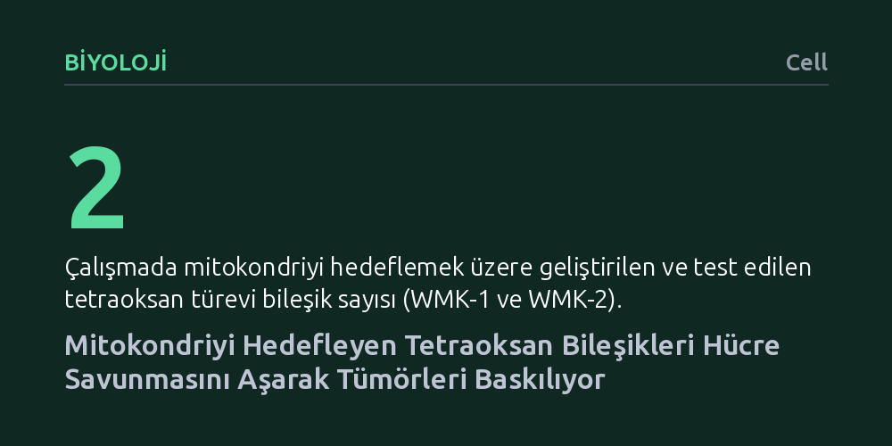

BIYOLOJI · Cell · 2026-10-19
Araştırmacılar, kanser hücrelerinin klasik hücre ölümüne karşı geliştirdiği direnci kırmak için mitokondriyi hedefleyen yeni tetraoksan bileşiklerini (WMK-1/2) inceledi. Geliştirilen bu moleküllerin, mevcut savunma mekanizmalarını atlatarak demire bağlı hücre ölümünü tetiklediği ve canlı modellerde tümörleri güçlü biçimde baskıladığı gösterildi.
Mevcut tedavilere dirençli kanser hücrelerinin, hücrenin ana savunma hatları atlatılarak doğrudan mitokondriyal yağ asidi peroksidasyonu yoluyla yok edilebileceğini gösterir.

Kanser tedavisindeki en büyük açmazlardan biri, tümör hücrelerinin zamanla uygulanan tedavilere karşı direnç geliştirmesidir. Sağlıklı hücreler görev süreleri bittiğinde ya da geri döndürülemez hasar aldıklarında programlı biçimde kendilerini yok ederken, kanser hücreleri bu intihar sinyallerini susturmayı başarır. Son yıllarda bilim dünyası, klasik hücre ölümünden kaçan tümörleri yok etmek amacıyla "ferroptoz" adı verilen ve demir aracılığıyla hücre zarlarının hasar görmesine dayanan farklı bir ölüm yoluna odaklanmıştır.
Ancak kanser hücreleri bu sürece karşı da güçlü savunma mekanizmaları geliştirir. Hücreler, GPX4 enzimi ve retinol türevleri gibi antioksidan kalkanlar kullanarak zarlarındaki yağ asitlerinin bozulmasını engeller. Bu koruyucu hatlar, mevcut ferroptoz tetikleyici kimyasalların tümör üzerindeki etkinliğini sınırlar. Dolayısıyla hücrenin var olan savunma sistemlerine takılmadan doğrudan kritik organellerde hasar başlatabilecek yeni moleküler yaklaşımlar araştırılmaktadır.
Araştırma ekibi bu direnç engelini aşabilmek için hücrenin enerji santrali olan mitokondriyi doğrudan hedefleyen yeni bir kimyasal strateji benimsedi. Sıtma tedavisinde kullanılan bileşiklerin yapısındaki endoperoksit köprülerinden yola çıkan araştırmacılar, demirle tepkimeye girerek serbest radikal üretebilen tetraoksan halkasını mitokondriye yönlendiren özel moleküller sentezledi. Bu doğrultuda WMK-1 ve WMK-2 olarak adlandırılan birinci nesil öncü bileşikler geliştirildi.
Ekip, tasarlanan bu moleküllerin etkinliğini belirlemek için hem hücre kültürleri üzerinde kapsamlı biyokimyasal deneyler yürüttü hem de canlı hayvan modellerinden yararlandı. Moleküllerin mitokondri zarına ulaşma başarısı, buradaki demir iyonlarıyla etkileşimi ve hücrenin standart antioksidan savunmalarını nasıl etkisiz kıldığı adım adım analiz edildi.
Deney sonuçları, geliştirilen tetraoksan türevlerinin mitokondri zarlarındaki yağ asitlerini doğrudan oksitleyerek hedeflenen hasarı başlattığını gösterdi. En kritik bulgu, bu sürecin kanser hücrelerinin yaygın olarak kullandığı GPX4 ve retinol kaynaklı savunma bariyerlerine takılmadan ilerlemesi oldu. Yazarlar bu özgün süreci literatürdeki klasik ferroptozdan ayrılan "farklı bir mito-ferroptoz alt yolu" olarak tanımlamaktadır.
Çalışmanın canlı hayvan modellerinde gerçekleştirilen testlerinde ise bu moleküllerin dokulara başarıyla ulaştığı ve tümör büyümesini güçlü biçimde baskıladığı belirlendi. Bileşikler, normal şartlarda ferroptoza direnç gösteren tümör modellerinde dahi mitokondriyal yıkımı tetikleyerek tümör kitlesinin gerilemesini sağladı.
Elde edilen sonuçlar, kanser hücrelerinin mitokondri düzeyinde hedeflenerek mevcut savunma kalkanlarının aşılabileceğini ve tümörlerin geriletilebileceğini göstermektedir. Özellikle standart tedavilere direnç kazanmış ve klasik intihar yollarını kapatmış tümör türleri için mitokondriyal lipit peroksidasyonu umut vadeden bir araştırma alanı sunmaktadır.
Bununla birlikte, çalışmanın henüz klinik öncesi aşamada olduğu ve deneylerin laboratuvardaki hayvan modelleriyle sınırlı kaldığı unutulmamalıdır. Birinci nesil olarak tanımlanan bu bileşiklerin insan bedenindeki farmakokinetik davranışları, olası yan etkileri ve güvenlilik profili henüz bilinmemektedir. Gelecek çalışmaların, bu moleküler yapıyı geliştirerek klinik denemelere uygun aday ilaçlar üretmesi beklenmektedir.